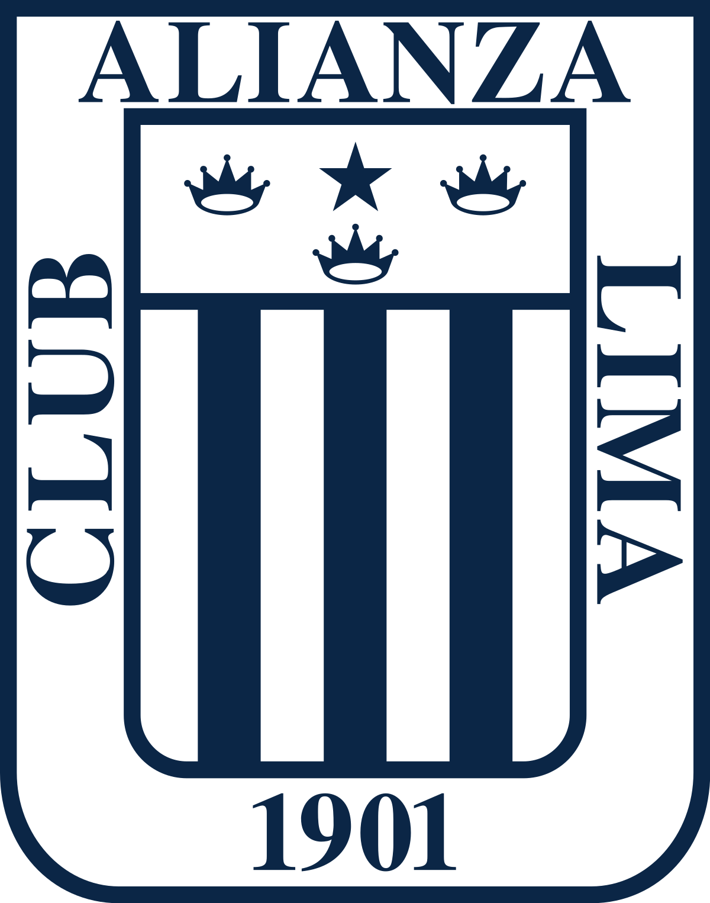
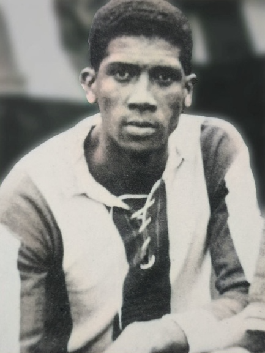

Hinchas de Alianza Lima
Inicio
Multimedia
Articulos
Fundación

El club fue fundado 15 de febrero de 1901, en Lima, Perú
. por iniciativa de los integrantes del Stud Alianza, una caballeriza que le pertenecía del entonces presidente de la República, Augusto B. Leguía. Empezaron su trayectoria con uniforme verde, en honor a
Don Eduardo Pedreschi
, uno de los fundadores del club.
Idolo

Carlos Alejandro Villanueva Martínez, nacido el 11 de Abril de 1944, en Lima
. Fue un futbolista peruano que destacó como delantero. Apodado Manguera, realizó toda su labor futbolística como jugador del
Club Alianza Lima
de la Primera División del Perú. Es el máximo ídolo del cuadro aliancista y del fútbol peruano.
Máximo Goleador Extranjero
Hernan Barcos, nacido el 11 de Abril de 1984, en Bell Ville, Argentina
. Llegó a las 38 anotaciones para superar al brasileño
Rosinaldo Lopes
y así ser el extranjero con más tantos en la historia del cuadro de La Victoria.